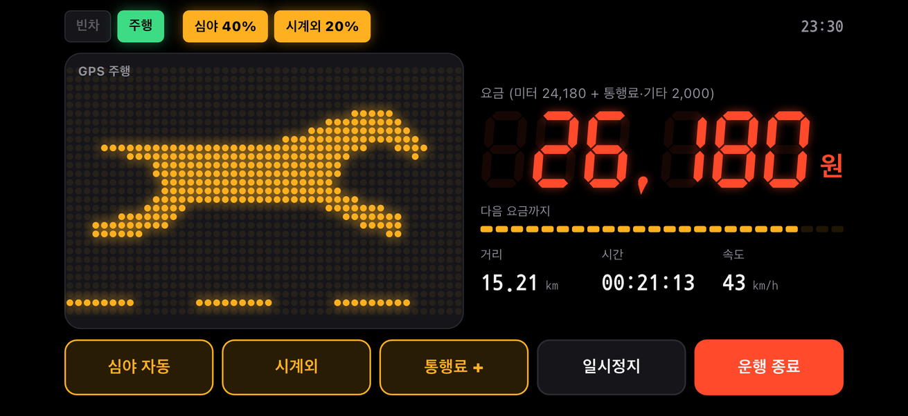
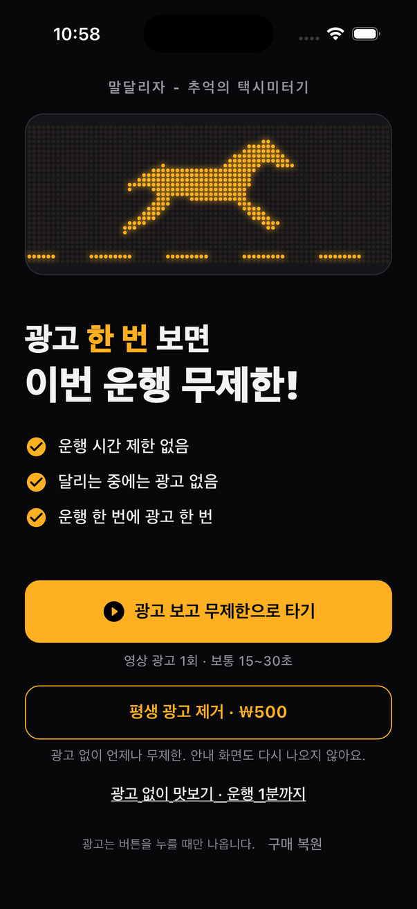
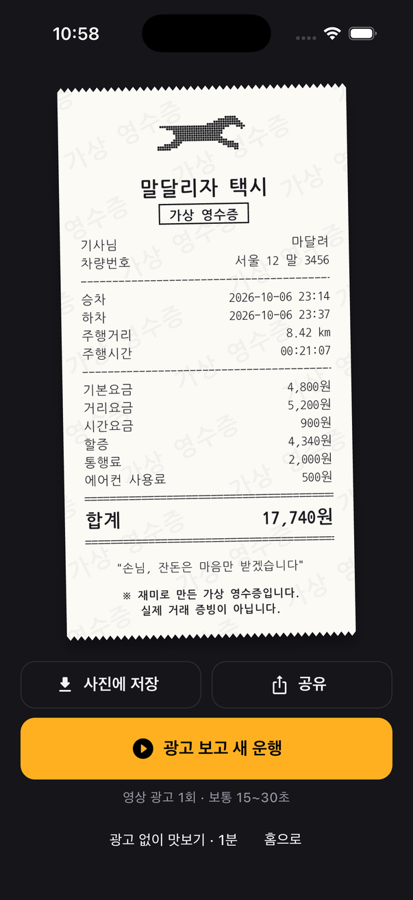

말달리자 - 추억의 택시미터기
내 차도, 친구 차도, 걸어가도 택시가 된다. 말 달리는 추억의 미터기.

이런 앱입니다
- 옛날 택시 그 느낌 그대로, 속도에 맞춰 달리는 도트 말
- 실제 택시처럼 움직이면 거리로, 서 있으면 시간으로 오르는 요금
- 심야할증, 시계외 할증, 통행료까지 입력
- 운행이 끝나면 가상 영수증을 사진으로 저장하거나 공유
- 달리는 중에는 광고가 나오지 않습니다


꼭 알아 두세요
- 재미로 쓰는 앱입니다. 실제 택시 요금과 다를 수 있고, 실제 결제 기능은 없습니다.
- 영수증은 가상 영수증이며 실제 거래 증빙으로 쓸 수 없습니다.
- 운전 중에는 조작하지 말고, 출발 전이나 정차 중에 사용하세요.